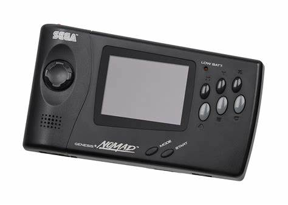

<!DOCTYPE html>

<html> <lang=en> </html>
    <head>
        <meta charset="UTF-8">
        <meta name="Callix Home Website" content="This is the primary home Website for Callix Electronics">
        <meta http-equiv="X-UA-Compatible" content="ie=edge">
        <meta name="description" content="Template Page">
        <meta name="keywords" content="Sections,Articles,Footer">
        <title>CallixHome</title>
        <link rel="stylesheet" href="CSSFormat/stylesheet.css">
        <link rel="icon" href="images_test/favicon_io" type="image/gif">
    </head>

    <style>
        footer {
           position: fixed;
           left: 0;
           bottom: 0;
           width: 100%;
           background-color: #F98E01;
           color: white;
           text-align: center;
        }
        </style>

<body> <!--Body Tag Start of Body Section display on screen -->
    <header>
        <h1 style="background-color: #F98E01; float: left; height: px; width: 100%;"></img>
            Callix Electronics</h1>
    
    <main> <!--Main section of content on page-->
        <section style="width: 100%; text-align: center; height: 150px;background-color: #F98E01;"> <!--Section grouping of content-->
            <ul style="background-color: #F98E01; height: 15px;">
            <li style="text-align: center; background-color: #F98E01;"><a href="CallixHome.html">Home</a></li>
                <li style="text-align: center; background-color: #F98E01;"><a href="CallixP2.html">Professional</a></li>
                <li style="text-align: center; background-color: #F98E01;"><a href="CallixP3.html">Personal</a></li>
                <li style="text-align: center; background-color: #F98E01;"><a href="CallixProducts.html">All Products</a></li>
                <li style="text-align: center; background-color: #F98E01;"><a href="CallixSupport.html">Support</a></li>
            </ul>
        </p>
        </section>
        <h2 style="text-align: center; background-color: #F98E01;">New product announcements:</h2>

    
</main>
    
    <aside style="width: 48%; height: 55%; background-color:#0f00db; float: right; border-radius: 10px; text-align: center;">
        <h3 style="color: white; width: 80%; height: 100%;;">The Callix Super-Pixi is a new and upcoming 32-bit super-powered handheld made for gaming with modern games on the go!
       
        Releasing in late 1997, the Callix Super-Pixi is a compact 32-bit handheld console that brings exciting portable gaming to the next level. With vibrant graphics and an intuitive design, it features iconic games like Super Tanks 32X and Avery Pixi Racers, offering thrilling experiences on the go. The Super-Pixi combines power and portability, delivering smooth gameplay and a growing library of titles to keep gamers entertained anytime, anywhere.
        </h3>
        
    </aside>
<p style=" color: white;">sjkvqahgvjqgbgcijvlqg</p>
<section style="clear: both;">
    <h3 style="text-align: center; background-color: #F98E01;">About Callix Electonics...</h3>
    <p style="background-color: #0f00db; color: white; margin: 10px; text-align: center; font-size: 115%; height: 30%; border-radius: 10px;">Since our founding in 1987, Callix Electronics has grown into a global leader in personal and professional electronics, delivering innovative products that push the boundaries of technology. Our journey began with the Callix-I and Com-Callix series of professional business and art computers, which became trusted tools for industries across the world. These early systems paved the way for Callix’s future success and solidified our reputation for creating high-performance, reliable products.

        Throughout the 1990s, Callix has continued to lead the charge in new technologies. In 1991, the Com-Callix Pro 486 desktop computer was introduced, making waves in the business world for its power and versatility. By 1994, Callix expanded into the portable gaming market with the release of the Callix Pixi, an 8-bit handheld console that offered both young and old an exciting new way to enjoy video games on the go. The Pixi’s success was just the beginning, as Callix continued to push into new markets and release cutting-edge consumer electronics.
        
        In 1996, Callix made a significant leap forward with the Callix ComLink, a revolutionary personal digital assistant (PDA) that enabled users to access the internet, send and receive email, and manage their contacts and schedule—all from the palm of their hand. The ComLink redefined what it meant to stay connected, offering an unparalleled level of convenience and mobility for professionals and individuals alike.
        
        As the world of portable gaming grew, Callix further solidified its position in the market with the release of the Callix Super-Pixi in 1997. This compact 32-bit handheld gaming system featured advanced graphics and exciting titles like Super Tanks 32X and Avery Pixi Racers, becoming a must-have for gaming enthusiasts.
        
        But Callix isn’t just about gaming and handheld technology. Our comprehensive product line also includes high-performance desktop computers, portable music players, digital cameras, and innovative home electronics. In 1996, we proudly introduced the Callix TapePro, a portable digital music player that offered true digital sound quality with the convenience of portability.
        
        Looking to the future, Callix remains committed to providing innovative solutions that enhance the lives of consumers and professionals. Our products continue to set the standard for quality and performance, and we are proud to be one of the leading technology companies worldwide.
        
        From the Callix-I to the Callix ComLink and beyond, Callix is shaping the future of technology today, with an unwavering focus on excellence and customer satisfaction.</p>
<h2></h2>
<p style="height: 50px; color: #F98E01;">Filler</p>
    </head>
    <body>
    
<footer> <!--Footer grouping of content for display end of screen-->
    <p>&copy;1992 Callix Electronics Inc., All Rights Reserved.</p>
</footer>
</section>
</body>

</html>
